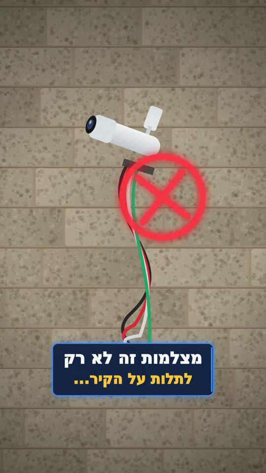

המצלמות שלכם
בכלל מקליטות?
בדיקה של מערכת קיימת, איתור התקלה ותיקון באותו ביקור כשאפשר. גם אם לא אני התקנתי אותה, וגם אם המתקין המקורי מזמן לא עונה לטלפון.
תקלות שאני רואה כמעט בכל בית
- המקליט לא מקליט, או שההקלטות נמחקות אחרי כמה ימים
- מצלמה שחורה, מטושטשת, או שנגמרה לה הדרך אחרי הגשם הראשון
- אין צפייה מהטלפון מאז שהחלפתם ראוטר או ספק אינטרנט
- ראיית לילה שלא עובדת, או תמונה שמסתנוורת מהפנס בחצר
- אזעקה שמצפצפת לבד, גלאי תקול או מערכת שאף אחד לא מוסר לכם שליטה עליה
- אינטרקום שמצלצל אבל לא פותח את השער
- כבל שנחתך בשיפוץ, או מתח שלא מגיע למצלמה
- הוספת מצלמה לפינה שהתגלתה כעיוורת
לא תמיד צריך להתחיל מאפס
אם התשתית שהונחה אצלכם תקינה, בדרך כלל אפשר להחליף רק את מה שצריך, מצלמה או מקליט, ולהמשיך להשתמש בכבלים הקיימים. זה ההבדל בין תיקון של כמה מאות שקלים לבין מערכת חדשה.
יוצא דופן אחד: מערכת אנלוגית ישנה. שם אני אומר מראש שעדיף לעבור לדיגיטלי, כי אין טעם להשקיע כסף בטכנולוגיה שלא תיתן לכם זיהוי אדם ולא תמונה שאפשר לעשות איתה משהו. אני עובד עם מצלמות דיגיטליות (IP) בלבד.
ביקור אבחון ₪250
- הביקור כולל בדיקת המערכת, איתור התקלה והסבר ישר מה הבעיה
- אם מתקדמים לעבודה, ה־₪250 מנוכים מהמחיר הסופי
- תקלה שנסגרת באותו ביקור: משלמים על הביקור ועל הציוד שהוחלף, וזה הכל
- כל עבודה גדולה מקבלת הצעת מחיר בכתב לפני שמתחילים
- המחירים סופיים, בלי מע״מ, כי העסק הוא עוסק פטור
- לתושבי מעלה אדומים ₪500 הנחה בעבודות מעל ₪3,000
בביקור של כשעה שכולל אפיון מלא של מערכת חדשה, העלות ₪500. גם היא מנוכה מהעבודה.
מי שמגיע לתקלה הוא מי שמדבר איתכם
- יוצא כוחות הביטחון, חבלן משטרה לשעבר. אבטחה היא לא קריירה שנייה בשבילי
- חשמלאי מוסמך, כך שתקלת הזנה או חשמל נסגרת באותו ביקור ובלי להזמין עוד בעל מקצוע
- עובד בשטח עם Provision-ISR ועם PIMA, ומכיר את התפריטים שלהן מהעבודה ולא מסרטון הדרכה
- אם אין מה לתקן, או שהתיקון לא שווה את הכסף, אני אומר את זה. לא מוכר מערכת חדשה בכוח
- בעל העסק הוא גם מי שמתקין, גם מי שעונה לטלפון וגם מי שחוזר אם משהו לא עובד
מה שואלים לפני שמזמינים ביקור
אתה מתקן מערכות שלא אתה התקנת?
כן, וזה חלק גדול מהעבודה. הרבה אנשים נשארים עם מערכת שהמתקין שלה נעלם או הפסיק לענות. אני לא צריך להיות המתקין המקורי כדי לאבחן ולתקן.
אתה מכיר את היצרן של המערכת שלי?
Provision-ISR ו־PIMA אני מכיר לעומק. עם יצרנים אחרים אני עובד לפי התפריטים והתיעוד שלהם, וזה עובד ברוב המקרים. אם בשיחת הטלפון יתברר שזו מערכת שלא אוכל לטפל בה, אגיד לכם לפני שתשלמו על ביקור.
אין לנו גישה למערכת, המתקין לא העביר כלום
מצב נפוץ מאוד. בחלק גדול מהמערכות אפשר להחזיר לכם שליטה מלאה, וזה אחד הדברים הראשונים שאני בודק בביקור. בכל מקרה, אני עושה את זה רק לבעל הנכס או למי שמוסמך מטעמו.
כמה זמן לוקח תיקון?
רוב התקלות נסגרות בביקור אחד. אם צריך להזמין ציוד, אני אומר בביקור מה נדרש, כמה זה עולה ומתי זה מגיע.
יש אחריות על התיקון?
על ציוד שאני מספק יש אחריות יצרן, ועל העבודה שלי אני עומד מאחורי התיקון. אם הדבר שתיקנתי חוזר, אני חוזר.
המערכת מותקנת בבניין משותף, מי מזמין?
בדרך כלל ועד הבית. אני מגיע לביקור, נותן הצעת מחיר בכתב שהוועד יכול להציג לדיירים, ומתאם את העבודה לשעות שנוחות לבניין.
תיקון מצלמות ואזעקות במעלה אדומים ובירושלים
אבחון ותיקון של מצלמות אבטחה, מקליטים, מערכות אזעקה ואינטרקום במעלה אדומים, ירושלים, כפר אדומים, קדר, מצפה יריחו והיישובים הסמוכים.
מה לא עובד אצלכם?
ספרו לי בכמה מילים מה קורה, ואומר לכם מראש אם זה נשמע כמו תיקון קטן או משהו גדול.